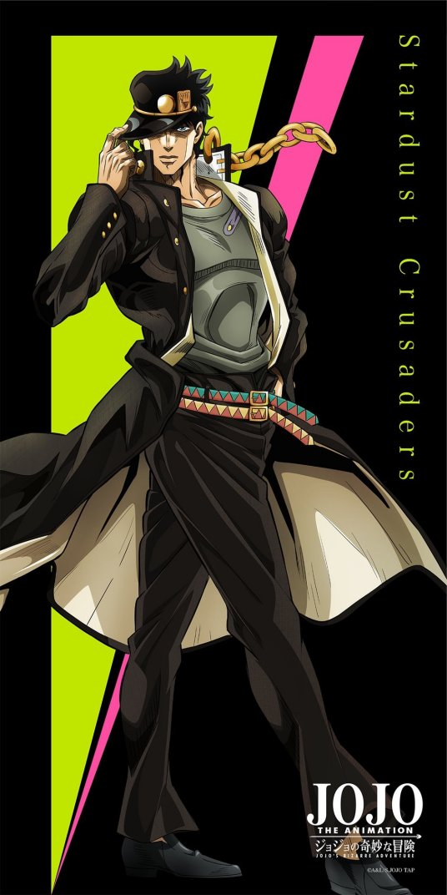

杀手皇后--败者食尘

角色形象空条承太郎生活在日本。他的父亲是日本人,职业是爵士音乐家,而母亲空条贺莉是已经在日本生活了20年的美籍英国人. 此外，承太郎的外祖父乔瑟夫·乔斯达也是美国纽约的不动产大王。在乔斯达家的宿敌迪奥苏醒后，受迪奥的诅咒影响，拥有乔斯达家血统的空条承太郎、乔瑟夫·乔斯达都获得了“替身” 。 承太郎的母亲空条贺莉受诅咒影响也获得了替身能力，但她无法驾驭替身，被自己的替身所折磨着。为了拯救贺莉，承太郎、乔瑟夫一行人决定前往埃及，杀死诅咒的根源迪奥. 角色能力替身由穆罕默德·阿布德尔按照塔罗牌的暗示命名为白金之星(Star Platinum)名字出自塔罗牌的第十七张牌“星星(The Star)。 速度很快，力量可以打碎钻石般坚硬的牙齿，精准度可以在零距离抓住手枪子弹。眼力也非常好，可以当做望远镜以及显微镜使用(甚至发现了紫色隐者念写的一张DIO阴暗的照片里面的苍蝇)。 能够以极快的速度连续出拳，攻击时会不断发出“欧拉”的喊声,使用过名为「流星指刺」(Star Finger)的招式，将食指和中指伸长后刺杀对手，但此招需要时间蓄力没有直接攻击快所以仅在被动环境下使用，而白金之星对战“正义”的时候也曾经以巨大的肺活量将“正义”吸入肺中。初期只是一般的近距离力量型替身。 替身能力
|
 |